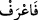
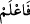

Allah’a ortak koşup ona isyân etmek olduğunu bildiğine göre artık sen Allah’ın birliğine
dâir olan ilminde ve bu ilminin gereği ile amel etmekte sâbit ol. Nitekim “Bizi doğru
yola ilet” (el-Fâtihâ 1/6) duâsı, “bizi doğru yolda sâbit ve dâim kıl” mânasına gelir.
Allah Teâlâ burada en büyük sultan olan kendi zâtından başka hiçbir kimsenin gerçek
mânâda ibâdete lâyık bir varlık olamayacağını kesin bir dille ifâde etmiştir. Allah’ın
birliğini bilmenin amel üzerine olan tartışmasız üstünlüğünden dolayı ilim amel üzerine
takdim edilmiştir. Böylece ilmin amel üzerine olan üstünlüğüne dikkat çekilmiştir. Zira
Allah’ın birliğini bilmek, herkese ilk olarak vacip olan şeydir.
İlim, mârifetten üstündür. Bundan dolayı Allah Teâlâ arafe kökünden
(fa‘raf: arif
ol) değil de alime fiilinden
(fa‘lem: bil-âlim ol) buyurdu. Çünkü insan bir şeyi
mârifet olarak bilse de ilim olarak onu kuşatmayabilir. Ancak onu ilim olarak bilip ilmi
ile o şeyi ihâta ettiğinde mârifet olarak da bilmiş olur. Ülûhiyeti/ilahlığı bilmek,
Allah’ın sıfatlarını bilmek kabilindendir. Çünkü ülûhiyet de Allah’ın sıfatlarından bir
sıfattır. Zaten hiçbir kimsenin Allah Teâlâ’nın zâtının künhünü ve mâhiyetini ihâta
etmesi düşünülemez. Zira bu muhaldir. Çünkü Allah’ı yine ancak/hakkıyla Allah bilir.
Bazı büyükler şöyle demiştir: Her ârifin mârifeti, ülûhiyet mertebesinde ve taayyün-i
evvel tâbir edilen ahadiyet mertebesinde son bulduğu, Allah’ın zâtının künhünü ve
hakikatini, O’nun hüviyetinin gaybını bilemediği ve O’nun sıfatlarını da ihâta edemediği
için Allah Teâlâ Kitab-ı Aziz’inde yaratılmışların kadr ü kıymet, mevki, makam ve
kabiliyet bakımından en mükemmeli olan Peygamberi’ne “Allah’tan başka ilah
olmadığını bil” buyurdu. Bununla Peygamberi’ne ve ona tâbi olan ümmetine şunu tenbih
etmiş oluyor ki, Cenâb-ı Hakk’ın yüce zâtından mârifeti mümkün olup elde edilebilecek
olan sadece bu ülûhiyet mertebesidir. Bunun ötesi yâni Hz. gayb-i mutlak ve gayb-ı
hüviyyet, evet bunlar oluşun takat ve kudreti dışındadır. Çünkü artık bunun ötesinde
isim, resim, nitelik, vasıf ve hüküm yoktur. Kayıtlı ve sınırlı olan bu oluş kuvvetine,
onun kayıt ve sınırlanmasını gerektiren şeyden başkası verilmez. Öyleyse bu kayıtlı ve
sınırlı olan oluş, Hz. gayb-ı mutlakı ve gayb-ı hüviyyeti nasıl idrak edebilir ki!
Nefsin kemâli olan tevhidin husûlü, Allah’ın emrine icâbeti gerekli kılar. Bundan
dolayı Allah Teâlâ insana, kendini kemâle erdirdikten sonra bir yardımlaşma ve
dayanışmanın gerçekleşmesi bakımından başkasının da tekmili için çalışması gerektiğini
bildirerek şöyle buyuruyor: “Kendi günâhın, inanan erkeklerin ve inanan kadınların
günâhı için (Allah’tan) mağfiret dile.” Peygamberimiz (s.a.)’in bahsedilen günahı,
onun, kendisinden bir üst makama terfi ettiği her makamdır. Bir de Peygamber (s.a.)’in
evlâ olanı terk etmesinden sâdır olan şeylerdir. Peygamberimiz (s.a.)’in bir üst makama
terfiden önce bulunduğu makamda bulunmasına ve evlâ olanı terk etmesine zenb/günah
tâbir edilmesi, onun Hak katındaki mevkiinin yüceliğindendir. Bu, nasıl zenb/günah
olmaz ki! “İyilerin iyilikleri, mukarreb kulların günahları konumundadır.” Ayrıca
bununla Peygamberimiz (s.a.), tevazua, nefsini kırmaya ve amellerini daha bir süzgeçten
geçirmeye irşâd edilmektedir.